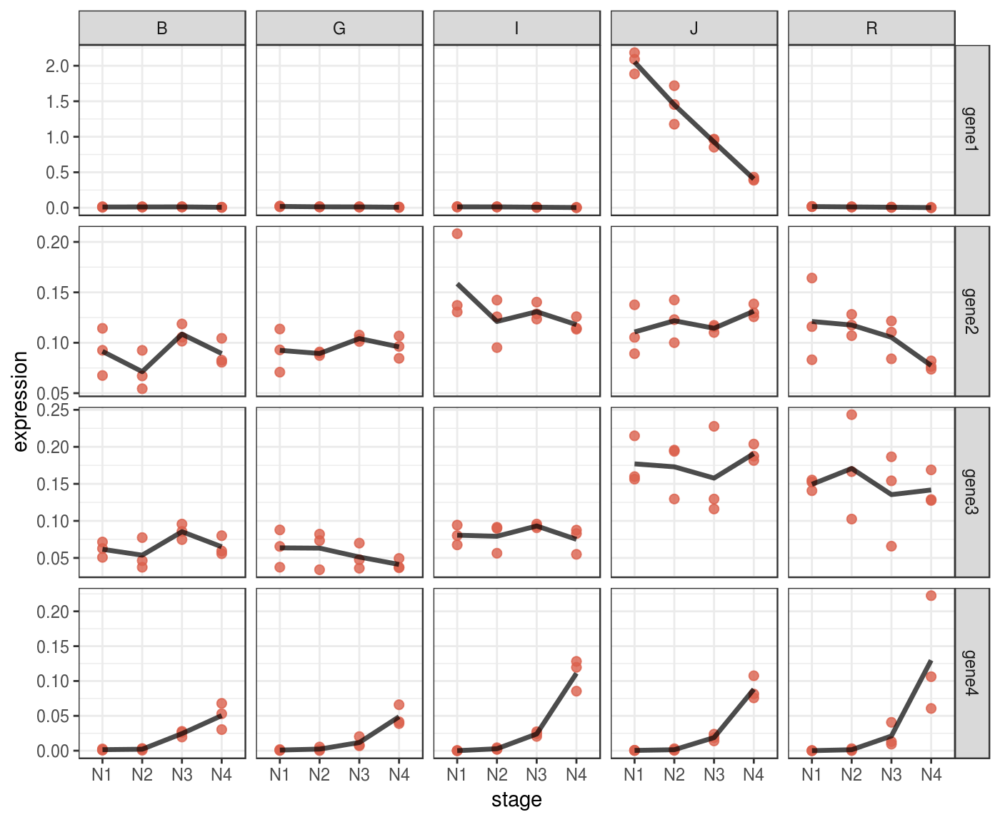

Introduction to Fluidgr
Otho Mantegazza
2018-11-12
introduction.RmdSetup
library(fluidgr)
library(magrittr)
library(dplyr)
library(stringr)
library(ggplot2)
library(forcats)
library(scales)
library(devtools)Simple Workflow
Record the path to your fluidigm CSV data and the name of your reference normalizers.
path_to_data <- system.file("extdata", "sample-fluidigm-run.csv",
package = "fluidgr",
mustWork = TRUE)
normalizers <- c("normalizer1",
"normalizer2",
"normalizer3")Parse them, normalize them and scale them in a magrittr pipe.
fluidigm_data <-
path_to_data %>%
read_fluidigm() %>%
normalize() %>%
scale_fluidigm()And your data are ready to be saved on disk or plotted with ggplot2.
In the next paragraphs you’ll find this same workflow explained in details.
Load your data into R
You can start by loading the output of the Fluidigm digital real time machine into R. This output is in a standard CSV format with a 10 lines header and triple column names, you can find an example of such file here.
Access the path to that sample CSV file in R with:
path_to_data <- system.file("extdata", "sample-fluidigm-run.csv",
package = "fluidgr",
mustWork = TRUE)And load it with the funciton read_fluidigm().
dat <- read_fluidigm(path = path_to_data)## Parsed with column specification:
## cols(
## chamber_id = col_character(),
## sample_name = col_character(),
## sample_type = col_character(),
## sample_rconc = col_double(),
## target_name = col_character(),
## target_type = col_character(),
## ct_value = col_double(),
## ct_calibrated_rconc = col_double(),
## ct_quality = col_double(),
## ct_call = col_character(),
## ct_threshold = col_double(),
## tm_inrange = col_double(),
## tm_outrange = col_integer(),
## tm_peakratio = col_integer(),
## comments = col_character()
## )Tidy your Data
After you have parsed the data, you can modify them as you wish using dplyr.
Remove samples
For example, you might want to remove selected samples:
Our example dataset contains samples that are dilution used for calibration curves.
dat$sample_name %>% unique()## [1] "H20" "J-N2R3" "R- Mix 1/160" "J-N2R2"
## [5] "R- Mix 1/80" "J-N2R1" "R- Mix 1/40" "J-N1R3"
## [9] "R- Mix 1/20" "J-N1R2" "R- Mix 1/10" "J-N1R1"
## [13] "R- Mix" "J-N4R3" "J-N4R2" "I -Mix 1/160"
## [17] "J-N4R1" "I -Mix 1/80" "J-N3R3" "I -Mix 1/40"
## [21] "J-N3R2" "I -Mix 1/20" "J-N3R1" "I -Mix 1/10"
## [25] "G-N2R3" "I - Mix" "G-N2R2" "G-N2R1"
## [29] "B - Mix 1/160" "G-N1R3" "B -Mix 1/80" "G-N1R2"
## [33] "B -Mix 1/40" "G-N1R1" "B -Mix 1/20" "G-N4R3"
## [37] "B -Mix 1/10" "G-N4R2" "B - Mix" "G-N4R1"
## [41] "G-N3R3" "G-Mix 1/160" "G-N3R2" "G-Mix 1/80"
## [45] "G-N3R1" "G-Mix 1/40" "B-N2R3" "G-Mix 1/20"
## [49] "B-N2R2" "G- Mix 1/10" "B-N2R1" "G-Mix"
## [53] "B-N1R3" "B-N1R2" "J - Mix 1/160" "B-N1R1"
## [57] "J - Mix 1/80" "B-N4R3" "J - Mix 1/40" "B-N4R2"
## [61] "J - Mix 1/20" "B-N4R1" "J - Mix 1/10" "B-N3R3"
## [65] "J - Mix" "B-N3R2" "B-N3R1" "R-N4R3"
## [69] "I-N2R3" "R-N4R2" "I-N2R2" "R-N4R1"
## [73] "I-N2R1" "R-N3R3" "I-N1R3" "R-N3R2"
## [77] "I-N1R2" "R-N3R1" "I-N1R1" "R-N2R3"
## [81] "I-N4R3" "R-N2R2" "I-N4R2" "R-N2R1"
## [85] "I-N4R1" "R-N1R3" "I-N3R3" "R-N1R2"
## [89] "I-N3R2" "R-N1R1" "I-N3R1"Those samples, all have the word “Mix” in their name, and can be removed with:
dat <-
dat %>%
filter(!sample_name %>% str_detect("Mix"))One sample “H2O” is a negative control, it also can be removed:
dat <-
dat %>%
filter(sample_name != "H20")Check measurements per sample
You can check that each sample has been measured the same number of times:
dat$sample_name %>% table()## .
## B-N1R1 B-N1R2 B-N1R3 B-N2R1 B-N2R2 B-N2R3 B-N3R1 B-N3R2 B-N3R3 B-N4R1
## 8 8 8 8 8 8 8 8 8 8
## B-N4R2 B-N4R3 G-N1R1 G-N1R2 G-N1R3 G-N2R1 G-N2R2 G-N2R3 G-N3R1 G-N3R2
## 8 8 8 8 8 8 8 8 8 8
## G-N3R3 G-N4R1 G-N4R2 G-N4R3 I-N1R1 I-N1R2 I-N1R3 I-N2R1 I-N2R2 I-N2R3
## 8 8 8 8 8 8 8 8 8 8
## I-N3R1 I-N3R2 I-N3R3 I-N4R1 I-N4R2 I-N4R3 J-N1R1 J-N1R2 J-N1R3 J-N2R1
## 8 8 8 8 8 8 8 8 8 8
## J-N2R2 J-N2R3 J-N3R1 J-N3R2 J-N3R3 J-N4R1 J-N4R2 J-N4R3 R-N1R1 R-N1R2
## 8 8 8 8 8 8 8 8 8 8
## R-N1R3 R-N2R1 R-N2R2 R-N2R3 R-N3R1 R-N3R2 R-N3R3 R-N4R1 R-N4R2 R-N4R3
## 8 8 8 8 8 8 8 8 8 8dat$sample_name %>% table() %>% unique()## [1] 8Check for duplicated targets
Also, one of the target is a duplicated normalizer. You can remove it with:
dat$target_name %>% unique()## [1] "normalizer1" "gene1" "gene4" "gene2"
## [5] "normalizer2" "normalizer3" "normalizer1bis" "gene3"dat <-
dat %>%
filter(target_name != "normalizer1bis")Normalize
You must provide the names of the normalizers exactly as they are stored in the target_name column. In this case the name of the normalizers is: normalizer1, normalizer2 and normalizer3.
normalizers <- c("normalizer1",
"normalizer2",
"normalizer3")
norm_dat <-
dat %>%
normalize(normalizers = normalizers) The normalize() function takes the data parsed by read_fluidigm() as object and returns the same data with two additional columns:
-
norm_geom_meanstores the geometric mean of normalizers for each sample. -
expressionstores the normalized expression values.
Expression values are normalized with the formula:
\[expression = 2^{-(C_T - C_Tnorm)}\]
Where, for each well, \(C_T\) is the recorded threshold cycle (ct_value) and \(C_Tnorm\) is the geometric mean of the normalizers CT values.
This formula is a simplification of the common \(2^{ - \Delta \Delta Ct}\) formula that skips calibration.
Scale
Scaling is not necessary, and you can communicate and visualize directly the normalized expression values; stored in the expression column of the norm_dat dataset.
Indeed scaling is not necessary, but, together with exploratory plots, scaling can help you detect patterns in your data. You can understand better the outcome of scaling when you visualize tour data in plots. This is why you can learn about the effects of scaling also in the next section “Visualize”.
Scale with the scale_fluidigm() function
Fluidgr provides the scale_fluidigm() function, that scales expression values by z-score according to the groups provided in the argument .group.
This function takes the dataset output of normalize() and returns the same dataset with the extra column scaled_expression.
scaled_dat <-
norm_dat %>%
scale_fluidigm(.group = target_name)Write your own scaling function
You can write your own scaling function, becaus scale_fluidigm() function is just a soft wrapper around dplyr’s group_by() and mutate(). If you want to try different scaling methods, you can replicate and tweak the output of scale_fluidigm() with:
This should provide to you a good basis and enough freedom to explore and visualize your data as you prefer.
Visualize
Fluidigmr does not provide plotting function, because all the functions that you need to plot this kind of data are already available in ggplot2. Indeed the dataset output of is already in a tidy/gathered format.
Here we provide some ideas of how you can explore, plot and visualize your Fluidigm data.
What variables are in your data?
Make the variables in your data explicit.
Effective visualization depends from the variable that determine the effect in your dataset and eventually by the question that you are trying to anwser.
For example in the sample dataset we are measuring the expression of four genes in 4 developmental stages in 5 species. The column target_name records the “gene” variable, while the other two variables, developmental stage and species, are hidden in the sample_name variable. We can make them explicit.
The sample_name variable is encoded as “J-N1R1”:
- The first letter “J” is the species.
- The letter and the number after the hyphen “N1” encode for the stage.
- The last letter and number “R1” encode for the replicate.
norm_dat <-
norm_dat %>%
# make species explicit
mutate(species = str_split_fixed(string = sample_name,
pattern = "-",
n = 2)[, 1]) %>%
# make stage explicit
mutate(stage = str_sub(string = sample_name,
start = 3,
end = 4)) %>%
# make replicate explicit
mutate(replicate = str_sub(string = sample_name,
start = 5,
end = 6))Lineplot
A lineplot can be informative directly on normalized data, without scaling.
You can use facets to display multivariate data.
p <- norm_dat %>%
ggplot(aes(x = stage,
y = expression)) +
# plot each expression value into a point
geom_point(size = 2,
col = "#DA614D",
alpha = .8) +
# it might be complicated to add a line that connect means
# across stages,
# because stages are encoded as a categorical variable,
# we must turn them into numeric
stat_summary(aes(x = stage %>%
as.factor(.) %>%
as.numeric(.)),
fun.y = mean,
geom="line",
size = 1.2,
alpha = .7,
linejoin = "round") +
# implement facetting with independent y values
# for each genes, since expression values are
# not comparable across genes
facet_grid(target_name ~ species,
scales = "free_y") +
theme_bw()
p %>% print()
Some patterns in your data might be more evident if you plot them in log scale.
p_log <-
p + scale_y_log10()
p_log %>% print()
Also using heatmap with ggplot2
p_heat <-
norm_dat %>%
ggplot(aes(x = stage,
y = target_name,
fill = expression)) +
geom_tile() +
facet_grid(. ~ species) +
scale_fill_viridis_c()
p_heat %>% print()
Sometime heatmap don’t convey muich invormation if you don’t scale your data.
For example we can scale every gene on z-score to make them comparable.
scaled_gene <-
norm_dat %>%
group_by(target_name) %>%
mutate(scaled_expression = expression %>%
rescale(from = range(.), to = c(0,1)))Check if the heatmap has improved
remeber to map the colours to the new scaled_expression values
p_heat <-
scaled_gene %>%
ggplot(aes(x = stage,
y = species,
fill = scaled_expression)) +
geom_tile() +
facet_grid(. ~ target_name) +
scale_fill_viridis_c()
p_heat %>% print()We can try to set more groups.
scaled_dat <-
norm_dat %>%
group_by(target_name, species) %>%
mutate(scaled_expression = expression %>%
rescale(from = range(.), to = c(0,1)))Check if the heatmap has improved
remeber to map the colours to the new scaled_expression values
p_heat <-
scaled_dat %>%
ggplot(aes(x = stage,
y = species,
fill = scaled_expression)) +
geom_tile() +
facet_grid(. ~ target_name) +
scale_fill_viridis_c()
p_heat %>% print()
Session Info
## ─ Session info ──────────────────────────────────────────────────────────
## setting value
## version R version 3.4.4 (2018-03-15)
## os Ubuntu 16.04.5 LTS
## system x86_64, linux-gnu
## ui X11
## language en_US
## collate en_US.UTF-8
## ctype en_US.UTF-8
## tz Europe/Paris
## date 2018-11-12
##
## ─ Packages ──────────────────────────────────────────────────────────────
## package * version date lib source
## assertthat 0.2.0 2017-04-11 [1] CRAN (R 3.4.4)
## backports 1.1.2 2017-12-13 [1] CRAN (R 3.4.4)
## base64enc 0.1-3 2015-07-28 [1] CRAN (R 3.4.4)
## bindr 0.1.1 2018-03-13 [1] CRAN (R 3.4.4)
## bindrcpp * 0.2.2 2018-03-29 [1] CRAN (R 3.4.4)
## callr 3.0.0 2018-08-24 [1] CRAN (R 3.4.4)
## cli 1.0.1 2018-09-25 [1] CRAN (R 3.4.4)
## colorspace 1.3-2 2016-12-14 [1] CRAN (R 3.4.4)
## commonmark 1.6 2018-09-30 [1] CRAN (R 3.4.4)
## crayon 1.3.4 2017-09-16 [1] CRAN (R 3.4.4)
## debugme 1.1.0 2017-10-22 [1] CRAN (R 3.4.4)
## desc 1.2.0 2018-05-01 [1] CRAN (R 3.4.4)
## devtools * 2.0.0 2018-10-19 [1] CRAN (R 3.4.4)
## digest 0.6.18 2018-10-10 [1] CRAN (R 3.4.4)
## dplyr * 0.7.7 2018-10-16 [1] CRAN (R 3.4.4)
## evaluate 0.12 2018-10-09 [1] CRAN (R 3.4.4)
## fluidgr * 0.0.1 2018-11-12 [1] local
## forcats * 0.3.0 2018-02-19 [1] CRAN (R 3.4.4)
## fs 1.2.6 2018-08-23 [1] CRAN (R 3.4.4)
## ggplot2 * 3.0.0 2018-07-03 [1] CRAN (R 3.4.4)
## glue 1.3.0 2018-07-17 [1] CRAN (R 3.4.4)
## gtable 0.2.0 2016-02-26 [1] CRAN (R 3.4.4)
## hms 0.4.2 2018-03-10 [1] CRAN (R 3.4.4)
## htmltools 0.3.6 2017-04-28 [1] CRAN (R 3.4.4)
## knitr 1.20 2018-02-20 [1] CRAN (R 3.4.4)
## labeling 0.3 2014-08-23 [1] CRAN (R 3.4.4)
## lazyeval 0.2.1 2017-10-29 [1] CRAN (R 3.4.4)
## magrittr * 1.5 2014-11-22 [1] CRAN (R 3.4.4)
## MASS 7.3-50 2018-04-30 [4] CRAN (R 3.4.4)
## memoise 1.1.0 2017-04-21 [1] CRAN (R 3.4.4)
## munsell 0.5.0 2018-06-12 [1] CRAN (R 3.4.4)
## pillar 1.3.0 2018-07-14 [1] CRAN (R 3.4.4)
## pkgbuild 1.0.2 2018-10-16 [1] CRAN (R 3.4.4)
## pkgconfig 2.0.2 2018-08-16 [1] CRAN (R 3.4.4)
## pkgdown 1.1.0 2018-06-02 [1] CRAN (R 3.4.4)
## pkgload 1.0.1 2018-10-11 [1] CRAN (R 3.4.4)
## plyr 1.8.4 2016-06-08 [1] CRAN (R 3.4.4)
## prettyunits 1.0.2 2015-07-13 [1] CRAN (R 3.4.4)
## processx 3.2.0 2018-08-16 [1] CRAN (R 3.4.4)
## ps 1.2.0 2018-10-16 [1] CRAN (R 3.4.4)
## purrr 0.2.5 2018-05-29 [1] CRAN (R 3.4.4)
## R6 2.3.0 2018-10-04 [1] CRAN (R 3.4.4)
## Rcpp 0.12.19 2018-10-01 [1] CRAN (R 3.4.4)
## readr 1.1.1 2017-05-16 [1] CRAN (R 3.4.4)
## remotes 2.0.1 2018-10-19 [1] CRAN (R 3.4.4)
## reshape2 1.4.3 2017-12-11 [1] CRAN (R 3.4.4)
## rlang 0.3.0 2018-10-22 [1] CRAN (R 3.4.4)
## rmarkdown 1.10 2018-06-11 [1] CRAN (R 3.4.4)
## roxygen2 6.1.0 2018-07-27 [1] CRAN (R 3.4.4)
## rprojroot 1.3-2 2018-01-03 [1] CRAN (R 3.4.4)
## rstudioapi 0.8 2018-10-02 [1] CRAN (R 3.4.4)
## scales * 1.0.0 2018-08-09 [1] CRAN (R 3.4.4)
## sessioninfo 1.1.0 2018-09-25 [1] CRAN (R 3.4.4)
## stringi 1.2.4 2018-07-20 [1] CRAN (R 3.4.4)
## stringr * 1.3.1 2018-05-10 [1] CRAN (R 3.4.4)
## testthat 2.0.1 2018-10-13 [1] CRAN (R 3.4.4)
## tibble 1.4.2 2018-01-22 [1] CRAN (R 3.4.4)
## tidyselect 0.2.5 2018-10-11 [1] CRAN (R 3.4.4)
## usethis * 1.4.0 2018-08-14 [1] CRAN (R 3.4.4)
## viridisLite 0.3.0 2018-02-01 [1] CRAN (R 3.4.4)
## withr 2.1.2 2018-03-15 [1] CRAN (R 3.4.4)
## xml2 1.2.0 2018-01-24 [1] CRAN (R 3.4.4)
## yaml 2.2.0 2018-07-25 [1] CRAN (R 3.4.4)
##
## [1] /home/otho/R/x86_64-pc-linux-gnu-library/3.4
## [2] /usr/local/lib/R/site-library
## [3] /usr/lib/R/site-library
## [4] /usr/lib/R/library